6 capturas de teléfono4 de tablet compacta4 de tablet grandeIcono + gráfico destacado
Textos de la ficha
Recursos visuales comunes


Capturas de teléfono
1080 × 1920 px · PNG · relación 9:16. Subí los archivos en orden numérico.

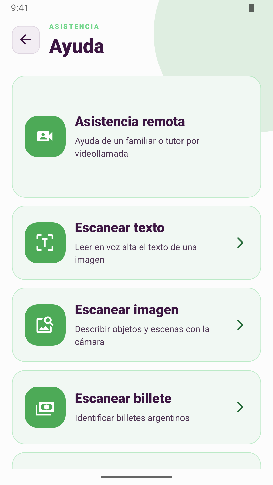
Ayuda de Anny: asistencia remota y opciones para escanear textos, imágenes y billetes.

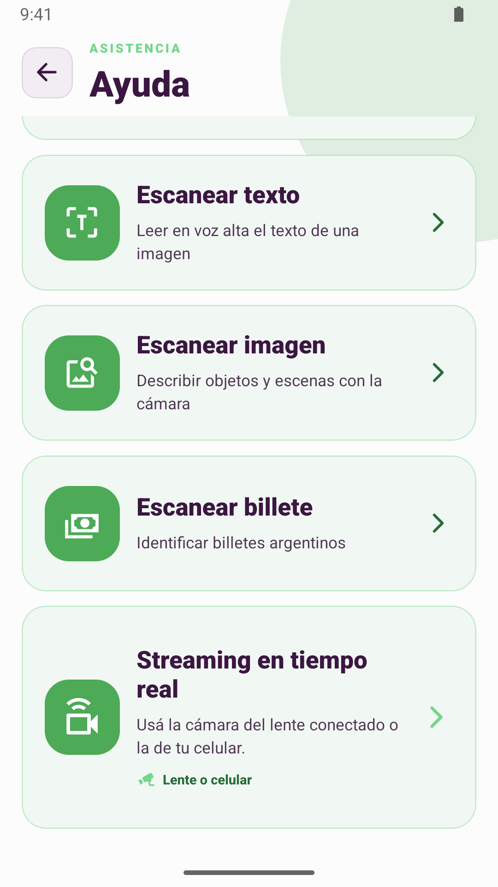
Herramientas para describir imágenes, reconocer billetes argentinos y escuchar el entorno con la cámara.

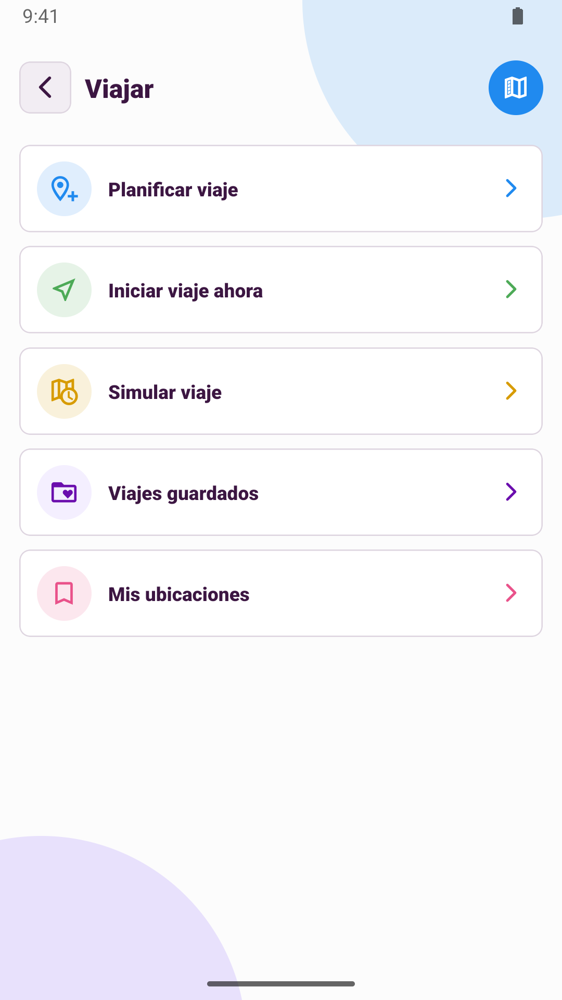
Viajar: planificar, iniciar y simular recorridos, consultar viajes guardados y acceder a mis ubicaciones.

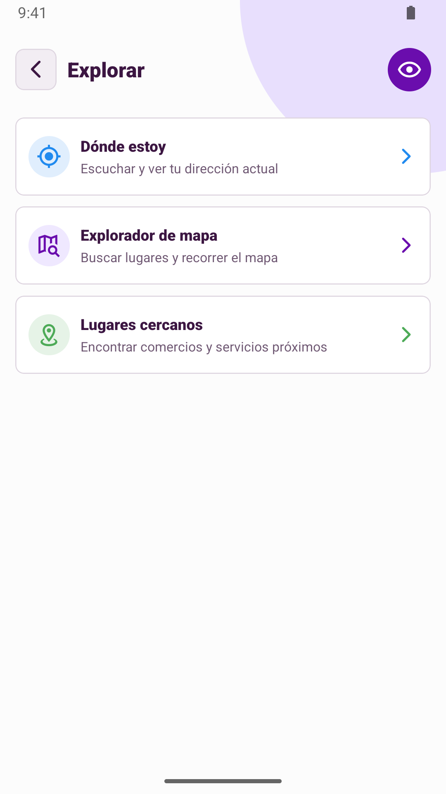
Explorar: consultar dónde estoy, recorrer el mapa y buscar lugares cercanos.

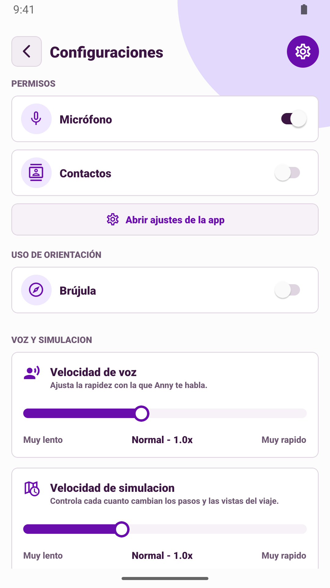
Configuraciones de Anny con controles de permisos y ajustes de voz.

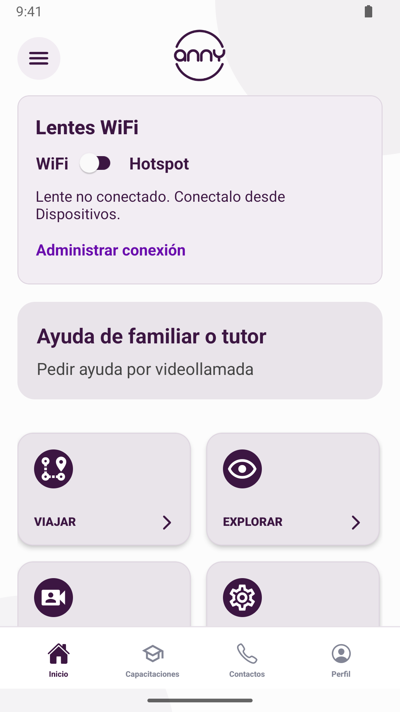
Inicio de Anny con conexión de lentes WiFi, ayuda de un familiar o tutor y accesos a las funciones principales.
Capturas para tablet de 7 pulgadas
1080 × 1920 px · PNG · relación 9:16. Subí los archivos en orden numérico.

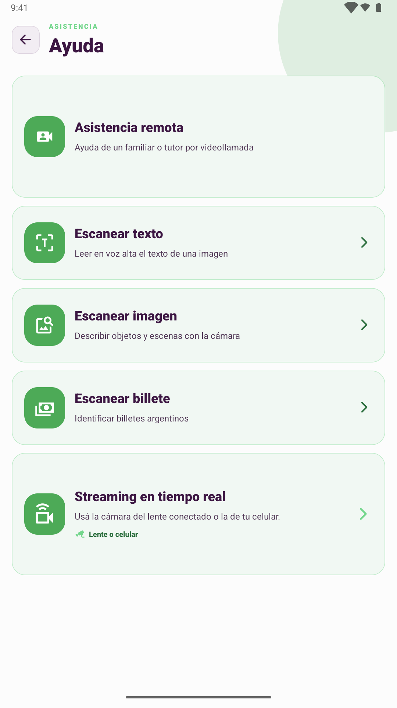
Ayuda de Anny en tablet: asistencia remota, escaneo de textos, imágenes y billetes, y streaming.

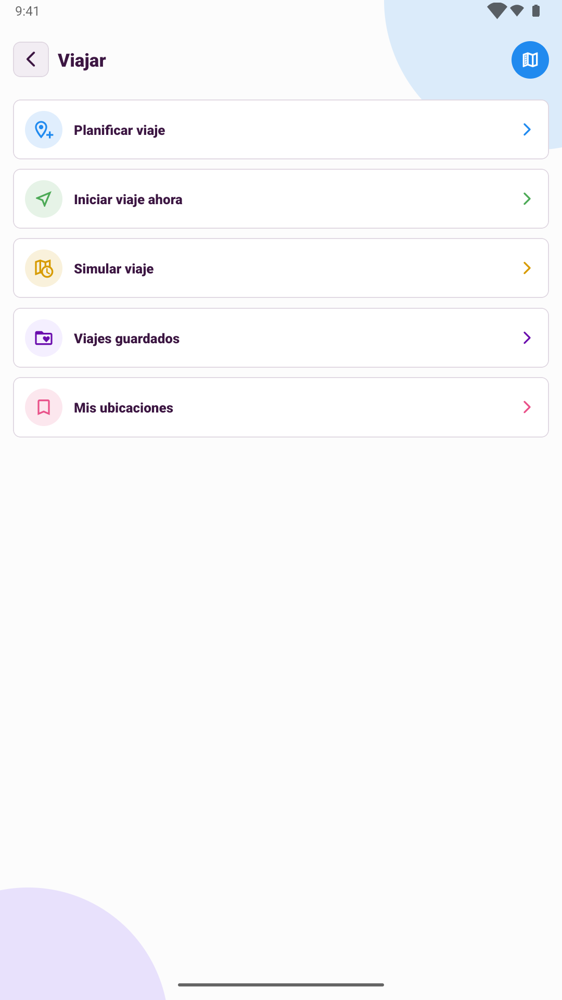
Opciones de viaje en tablet: planificar, iniciar, simular y guardar recorridos y ubicaciones.

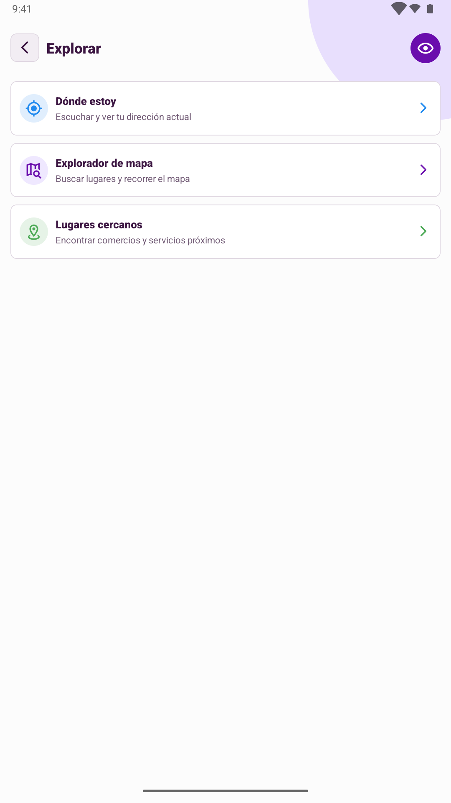
Explorar en tablet: ubicación actual, explorador de mapa y búsqueda de lugares cercanos.

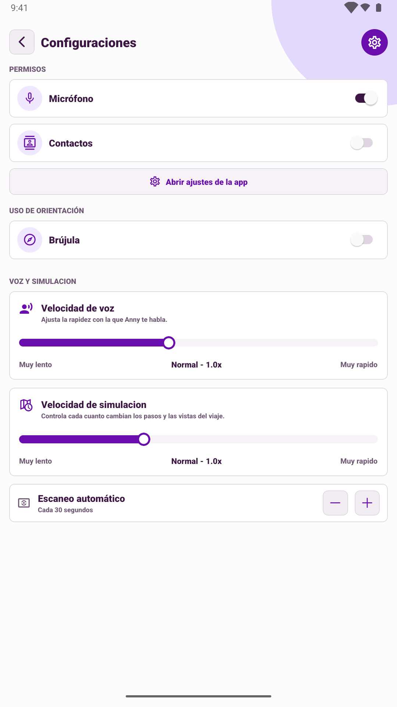
Configuración de Anny en tablet con permisos, controles de voz e intervalo de escaneo.
Capturas para tablet de 10 pulgadas
1440 × 2560 px · PNG · relación 9:16. Subí los archivos en orden numérico.

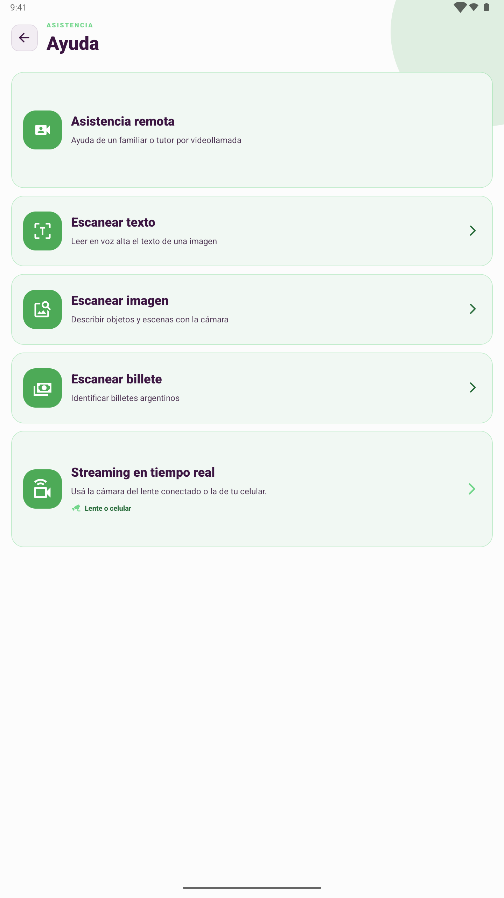
Ayuda de Anny en pantalla grande con acceso a videollamadas, escáneres y streaming de cámara.

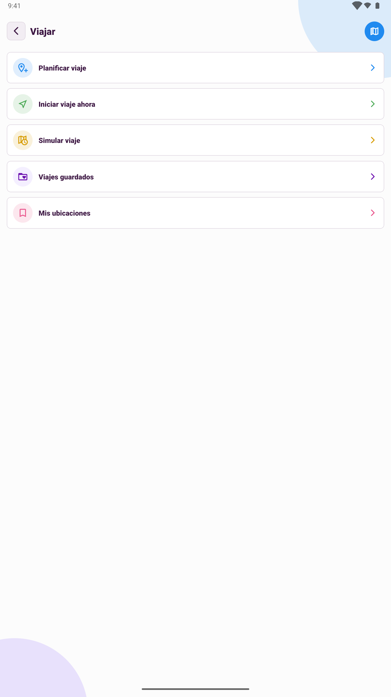
Viajar en pantalla grande con opciones para planificar, iniciar, simular y consultar recorridos.

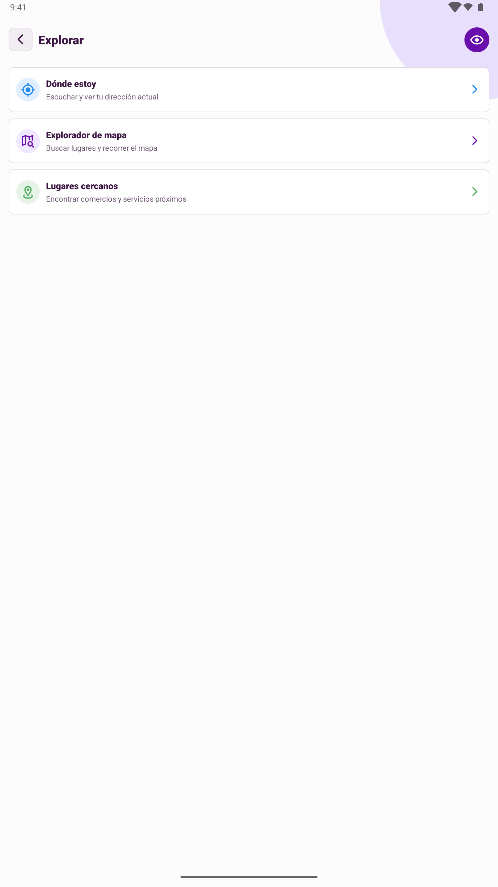
Explorar en pantalla grande con ubicación actual, explorador de mapa y lugares cercanos.

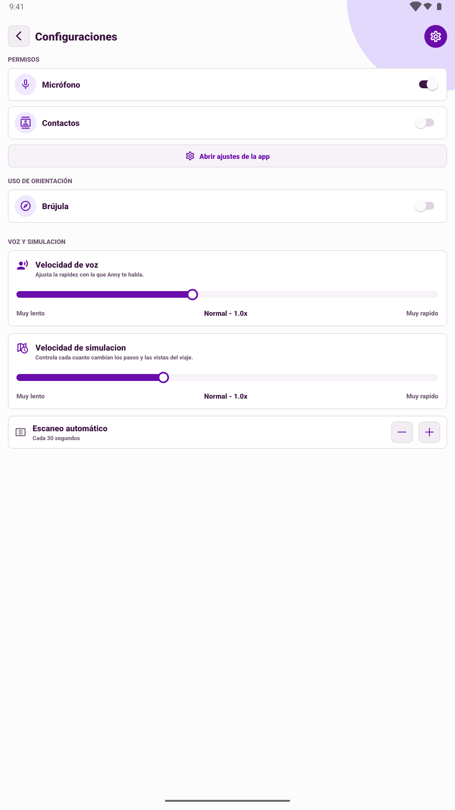
Configuración de Anny en pantalla grande con permisos, ajustes de voz e intervalo de escaneo.
Otros campos
Vídeo: dejalo vacío por ahora. No hay un vídeo publicado en YouTube incluido en este paquete.
Ordenadores y Android XR: dejalos vacíos salvo que distribuyas una experiencia verificada para esos formatos. Los lentes WiFi no equivalen a una aplicación XR.
Capturas de una compilación local de Anny 1.0.3. Comparalas con la versión que publiques. Este paquete no se cargó en Play Console. Gráfico creado con image_gen; prompt exacto. Medidas y tamaños verificados.
Referencia: recursos de vista previa de Google Play.